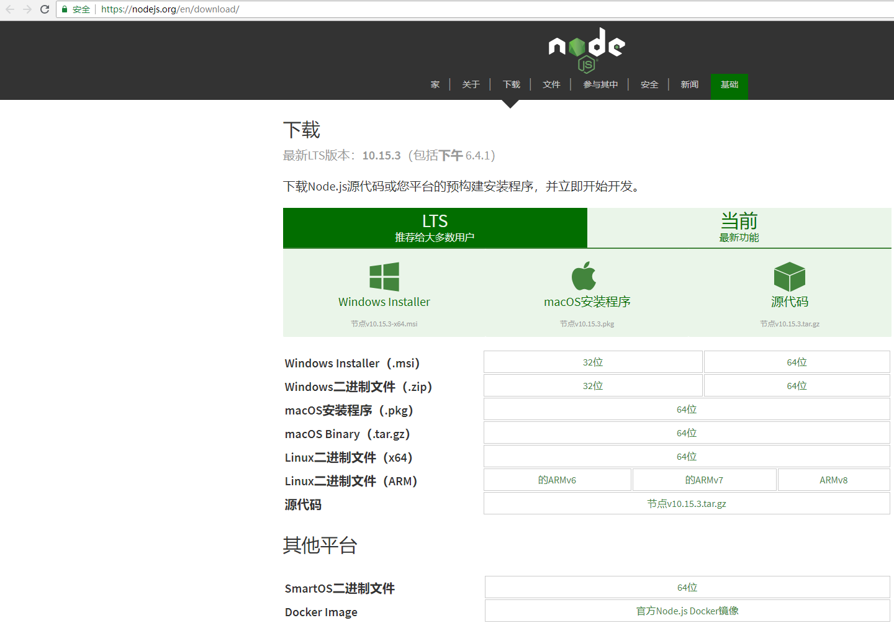
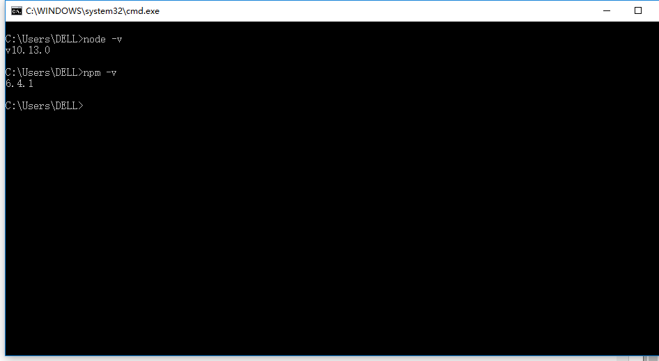
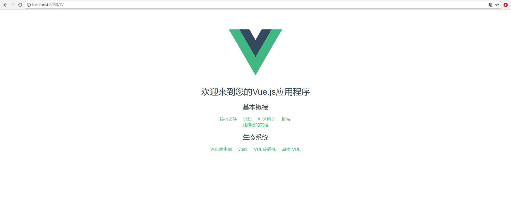

一. 提前准备工作
1.Node.js环境
2.Windows10
3.npm（前端包管理工具）
4.webpack（前端资源加载/打包工具）
二. 开始安装
1.。下载并安装Node.js
下载地址：https://nodejs.org/en/download/

2.在cmd中查看node.js是否安装成功，以及是否安装npm

3.由于npm安装资源时速度慢，推荐使用淘宝的镜像及其命令cnpm，安装使用介绍参照：使用淘宝NPM镜像。
＃查看版本
npm -v
＃升级npm
cnpm install npm -g
＃升级或安装cnpm
npm install cnpm -g
4.安装vue的脚手架工具（vue项目前期项目目录结构的工具）
cnpm install -global vue-cli查看安装目录 C:\Users\Administrator\AppData\Roaming\npm 5.在cmd中使用webpack创建一个vue项目
#进入到项目目录
cd D:\project\vue
#创建项目
vue init webpack 项目名称之后会出现对话提示。
“Project name”：这个是项目名称，默认是输入时的那个名称，想改的话直接输入修改，也可以直接回车
“Install vue-router”:是否需要vue-router，这里默认选择使用，这样生成好的项目就会有相关的路由配置文件
“Use ESLint to lint your code”:是否使用ESLint，刚才说了我们这个项目需要使用所以也是直接回车，默认使用，这样会生成相关的ESLint配置
“Setup unit tests with Karma + Moch?”: 是否安装单元测试。由于我们现在还没有单元测试，所以这里选择的是”N”，而不是直接回车哦
“Setup e2e tests with Nightwatch”：是否安装e2e测试，这里我也同样选择的是“N”
这几个配置选择yes 或者 no 对于我们项目最大的影响就是，如果选择了yes 则生成的项目会自动有相关的配置，有一些loader我们就要配套下载。所以如果我们确定不用的话最好不要yes，要么下一步要下很多没有用的loader
5.安装完成，接下来就可以马上开始运行我们的vue网站了！
三. 运行第一个Vue网站
在cmd中输入以下命令
cd 项目名称
cnpm run dev打开http//:localhost:8080就可以访问

如何使用编辑工具打开网站？
1.下载 Visual Studio Code
2.在vsCode中打开项目文件路径，在终端中输入cnpm run dev 回车